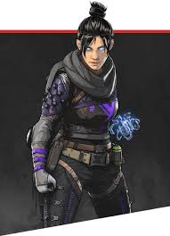
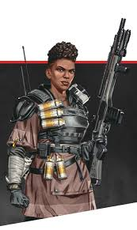
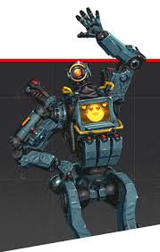

Wraith
Great mobility and repositioning abilities. Wraiths ability allows her to go into the void and take no damage for a couple seconds, useful for repositioning. Then her ultimate is a portal she can make that her teammates can take to get into new positions

Bangalore
Strong smokes and speed boosts for combat. Bangalores ability allows her to shoot down two smokes to provide cover for her teamt to move or at enemies to blind them. Her passive gives her a speed boost when she is taking enemy fire. Bangalores ultimate allows her to throw down a artilliery strike that will have a delayed explosion, great for allowing her team to run away from a fight or third party a fight happening.

Pathfinder
Excellent movement and team rotation options. Pathfinders ability is is a grapple that can take good height in situations or escape enemys. His ultimate is a zipline anyone can take across a long distance to get into zones or leave a fight.